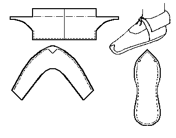

Madan slipper/shoes (Late 12th/Early 13th Century)
Based on material in Osprey's
Saracen Faris, and so may not be wholly accurate. The turned sole is probably rawhide. The basic design is MY estimate of the pattern, and may not be absolutely accurate.
Return to
[Index]
Footwear of the Middle Ages - Historical Shoe Designs/Number 45, by I. Marc Carlson. Copyright 1996
This page is given for the free exchange of information, provided the Author's Name is included in all future revisions, and no money change hands, other than as expressed in the Copyright Page.